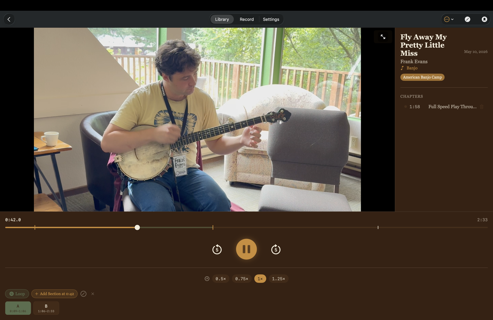
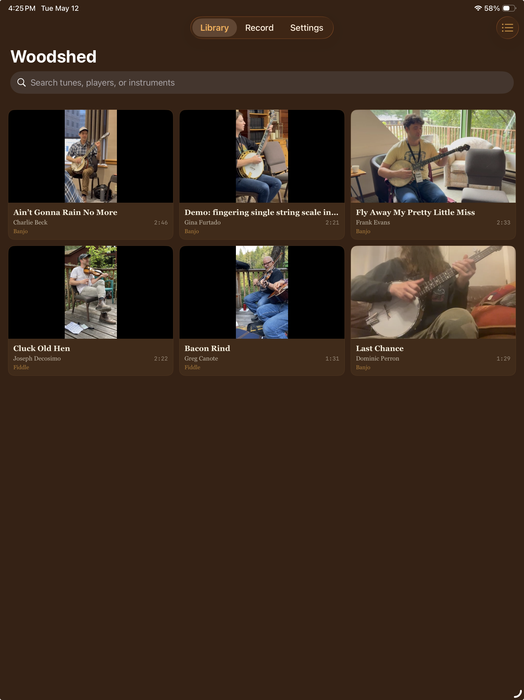
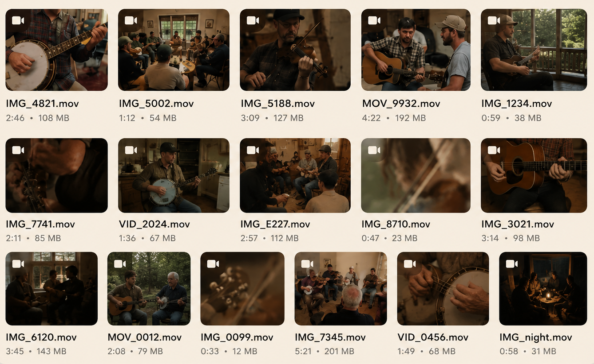
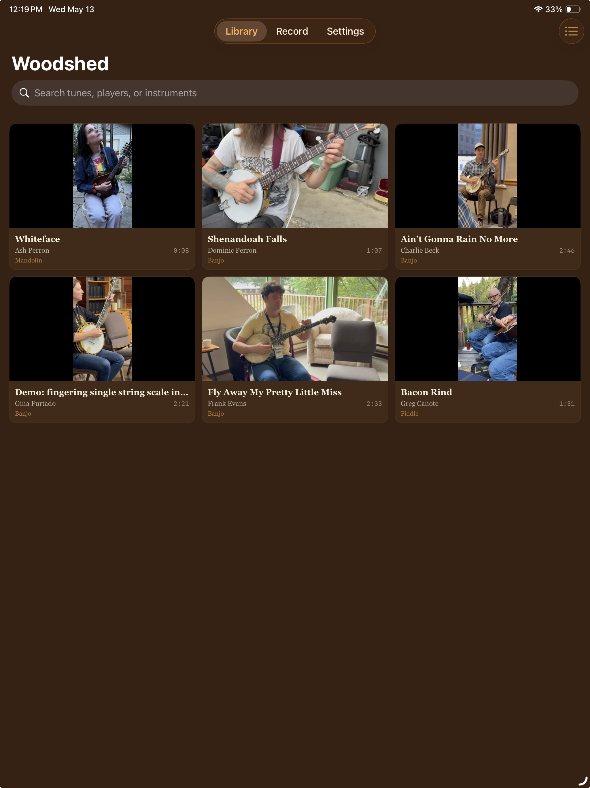

Woodshed
Free on the App Store — iPhone, iPad & Mac
Get
Built for musicians who learn by ear.
That tune from the workshop.
That lick from the parking lot jam.
That version you swore you’d remember.
Capture tunes in the moment. Come back when you’re ready to woodshed.
Available for iPhone, iPad, and Mac



You recorded something worth keeping.
Six weeks later, “IMG_4821.mov” means nothing.

Catch the tune in the moment. Come back when you have time to really work on it.
Your library follows you automatically across devices.
Caught the tune

Added the details
Practiced the hard part